Explorer, filtrer et exporter sans écrire de SQL
BD TOPO® 3.5 © IGN, Haute-Garonne.
Ce guide passe en revue chaque partie du panneau FilterMate, avec des captures d'écran prises dans QGIS 4.2 (interface en anglais). Lisez-le de haut en bas la première fois, puis utilisez le sommaire comme référence. Tout ce qui est montré ici fonctionne à l'identique sur QGIS 3.x (Qt5) et QGIS 4.x (Qt6).
1Comment fonctionne FilterMate
FilterMate applique un filtre de sous-ensemble à vos couches vectorielles. Rien n'est supprimé ni copié : la couche filtrée n'affiche que les entités qui correspondent, exactement comme si vous aviez saisi un filtre fournisseur dans les propriétés de la couche. FilterMate construit ce filtre pour vous, dans le langage natif de la source de données (SQL PostGIS, SQL SpatiaLite ou expression QGIS pour les fichiers). Les rasters et les nuages de points se filtrent aussi : ils sont découpés dans un fichier temporaire qui remplace leur source tant que le filtre est actif (voir Rasters et nuages de points LiDAR).
Chaque filtre spatial suit le même schéma en trois parties :
1. Couche source
La couche dans laquelle vous choisissez une géométrie de référence, via la zone Exploring : une entité, plusieurs entités ou une expression.
2. Prédicat spatial
La relation à tester : Intersect, Contain, Are within, Touch, etc., avec éventuellement une distance tampon.
3. Couches cibles
Les couches qui sont filtrées. Seules leurs entités qui vérifient le prédicat vis-à-vis de la géométrie source restent visibles.
Les filtres purement attributaires fonctionnent aussi : sans couche cible ni prédicat, FilterMate filtre la couche source
elle-même sur les entités choisies dans la zone Exploring. Les filtres s'enchaînent avec AND, OR
et AND NOT, s'annulent, se rétablissent, se sauvegardent en favoris et s'exportent vers un nouveau fichier ou un projet GeoPackage.
2Installation
Depuis le dépôt de plugins QGIS (recommandé)
- Dans QGIS, ouvrez Extensions → Installer/Gérer les extensions…
- Cherchez FilterMate dans l'onglet Toutes et cliquez sur Installer l'extension.
- Un bouton FilterMate apparaît dans la barre d'outils des extensions. Cliquez dessus pour ouvrir le panneau.
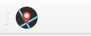
Installation manuelle
Téléchargez le ZIP depuis les releases GitHub, puis utilisez Installer depuis un ZIP dans le gestionnaire d'extensions, ou décompressez-le dans le dossier des extensions de votre profil :
| Système | Dossier des extensions |
|---|---|
| Windows | %APPDATA%\QGIS\QGIS3\profiles\default\python\plugins\ |
| Linux | ~/.local/share/QGIS/QGIS3/profiles/default/python/plugins/ |
| macOS | ~/Library/Application Support/QGIS/QGIS3/profiles/default/python/plugins/ |
QGIS4 sur certaines plateformes.
Préférences → Profils utilisateurs → Ouvrir le dossier du profil actif ouvre toujours le bon endroit.
Optionnel : PostgreSQL / PostGIS
FilterMate filtre les couches PostGIS côté serveur. Cela nécessite le paquet Python psycopg2 dans l'environnement Python de QGIS :
pip install psycopg2-binarySous Windows, lancez la commande depuis l'OSGeo4W Shell livré avec QGIS. Sans ce paquet, les couches PostgreSQL fonctionnent quand même via le backend OGR générique, simplement plus lentement.
3Le panneau en un coup d'œil
FilterMate est un panneau ancrable. Par défaut il s'ouvre à droite de la fenêtre QGIS et se déplace, se détache ou se redimensionne comme n'importe quel panneau QGIS.
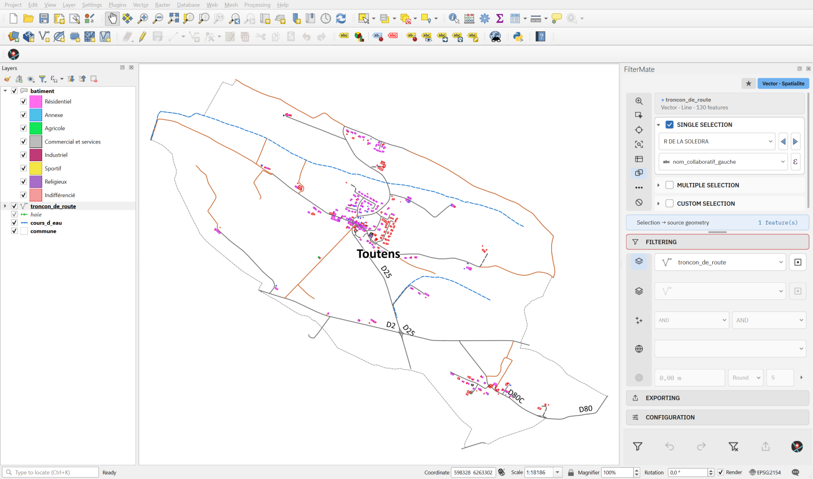
Le panneau se compose de cinq zones, de haut en bas :
| Zone | Rôle |
|---|---|
| Badges de la barre de titre | Les favoris, le détachement et la fermeture sont des badges de la barre de titre du panneau. Le bouton ★ ouvre le menu des favoris ; il passe à l'orange dès que des favoris sont enregistrés. Un bouton à côté replie EXPLORING. L'étiquette colorée de la source, dans la fiche de la couche, indique le type de la couche courante et ce qui la lit : le backend pour une couche vecteur (PostgreSQL, Spatialite, OGR, Memory), le fournisseur pour un raster ou un nuage de points. Par exemple Vector · Spatialite Raster · GDAL Point cloud · COPC. |
| Pile du haut | Agent, puis la zone Exploring. AGENT est un tchat qui filtre à partir d'une phrase (section 14). Exploring sélectionne sur la couche courante, décrite par la fiche en haut de la zone. Pour une couche vecteur : sélection simple, multiple ou par expression, plus une colonne de boutons de navigation. Les rasters et les nuages de points ont leurs propres outils (section 13). |
| Pile du bas | Trois sections repliables : Filtering, Exporting et Configuration. |
| Barre d'actions | Les six boutons qui agissent réellement : Filter, Undo, Redo, Unfilter, Export, About. |
Une poignée que vous pouvez faire glisser sépare les deux piles ; le panneau retient sa position. Au plus une section est ouverte dans chaque pile. Ouvrir AGENT replie EXPLORING et FILTERING ; ouvrir FILTERING ramène EXPLORING. AGENT est affiché par défaut et se masque dans l'onglet Configuration.
Les captures de cette section ont été prises avant la section AGENT et les badges de la barre de titre : elles montrent le bouton des favoris à côté du badge de la couche et pas de section AGENT.
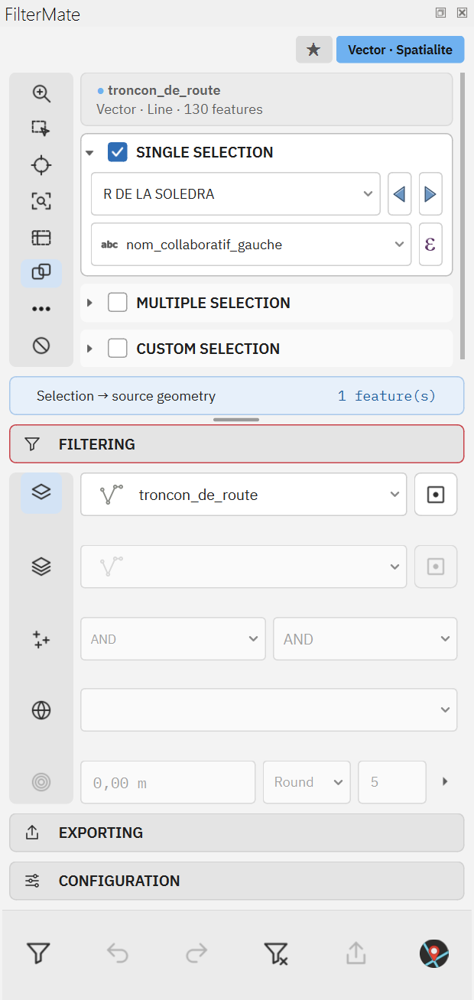
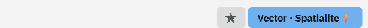
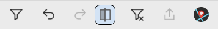
4Explorer une couche
BD TOPO® 3.5 © IGN, communes de Haute-Garonne.
La zone Exploring travaille sur la couche courante, affichée dans la première ligne de l'onglet Filtering. Par défaut elle suit la couche sélectionnée dans le panneau Couches de QGIS (bouton auto current layer, premier de la colonne de l'onglet Filtering). Désactivez ce bouton pour choisir la couche à la main dans la liste déroulante.
Trois modes de sélection sont proposés. Cocher l'un décoche les autres, et l'en-tête de chaque bloc le déplie ou le replie.
Sélection simple
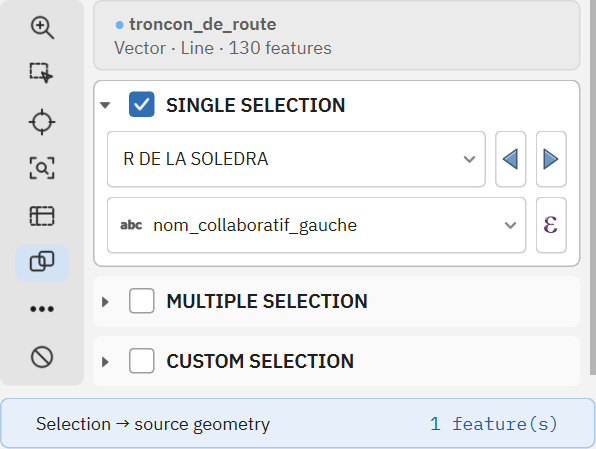
Choisissez une entité dans une liste déroulante avec recherche. La seconde ligne est l'expression d'affichage :
FilterMate détecte automatiquement un champ de nom pertinent (name, label, id…) mais vous pouvez saisir n'importe quelle expression QGIS,
par exemple "code" || ' - ' || "nom". Les flèches bleues passent à l'entité précédente ou suivante.
Sélection multiple
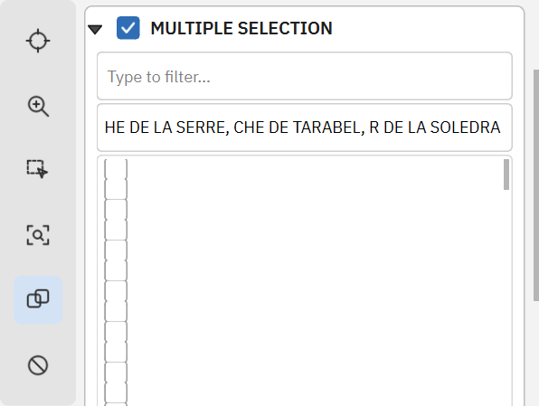
Cochez autant d'entités que nécessaire. La liste charge au plus 1000 lignes (paramétrable) pour que les très grosses couches ne figent jamais QGIS. Quand la liste est tronquée, la saisie dans le champ de filtre cherche dans toute la couche, et Select All dans le menu contextuel charge tout.
Sélection personnalisée (expression)
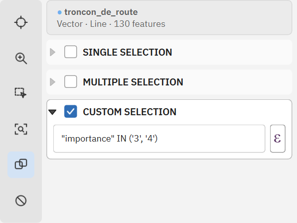
Écrivez une expression QGIS ; chaque entité qu'elle retient entre dans la géométrie de référence. C'est le mode à utiliser pour
« toutes les entités » : une expression toujours vraie comme 1 ou TRUE prend toute la couche source.
La colonne de boutons Exploring
Les boutons verticaux à gauche des blocs de sélection, de haut en bas. Rasters et nuages de points gardent le même cadre : Zoom et l'aperçu en tête, leurs outils de carte ensuite, puis le lien, More et Reset.
| Bouton | Effet |
|---|---|
| Zoom | Zoome le canevas sur la ou les entités sélectionnées. |
| Selecting (bascule) | Reflète votre sélection FilterMate en sélection QGIS sur la carte, et inversement : sélectionner sur le canevas met à jour les blocs Exploring. |
| Identify | Identifie l'entité sélectionnée sur la carte (comme l'outil d'identification de QGIS). |
| Tracking (bascule) | Zoome automatiquement à chaque changement d'entité sélectionnée. |
| Zone (bascule) | Dessinez un rectangle, un polygone, une forme libre ou un cercle sur la carte (clic droit sur le bouton pour la forme) : les entités touchées sont sélectionnées. |
| Linking (bascule) | Garde les trois blocs de sélection synchronisés : changer de mode conserve les entités courantes. |
| More (⋯) | Les outils de sélection de QGIS, la sélection par expression, inverser ou vider la sélection, la table attributaire de la sélection. |
| Reset | Efface toutes les propriétés d'exploration mémorisées pour la couche (expression d'affichage, sélection, mode). |
Chaque couche mémorise ses propres réglages d'exploration dans le projet : changer de couche puis y revenir restaure votre sélection.
5L'onglet Filtering
BD TOPO® 3.5 © IGN, Grenade.
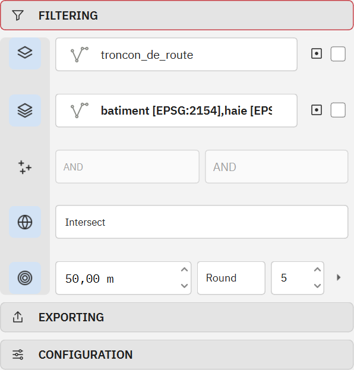
Chaque ligne de l'onglet Filtering s'active et se désactive par le bouton de la colonne à sa gauche. Une ligne désactivée est ignorée quand vous lancez Filter, ce qui permet de garder un tampon ou un prédicat configuré sans l'utiliser.
Ligne par ligne
| Bouton | Ligne | Signification |
|---|---|---|
| Auto current layer | Couche source | Activé, la couche source suit le panneau Couches de QGIS. Désactivé, choisissez-la dans la liste. La petite icône et la case à droite activent l'option centroïde pour la géométrie source. |
| Layers to filter | Couches cibles | Liste à cocher des autres couches du projet : vecteur et, depuis la 5.0, raster et nuages de points. Clic droit pour Select All, Deselect All ou par type de géométrie. La case à droite utilise les centroïdes pour les couches cibles. |
| Combine operator | Deux listes | Comment un nouveau filtre se combine avec celui déjà appliqué. À gauche : pour la couche source. À droite : pour les couches cibles. Valeurs : AND, OR et AND NOT. |
| Geometric predicates | Liste de prédicats | Liste à cocher des relations spatiales. Plusieurs peuvent être cochées ; elles sont combinées par OR. |
| Buffer value | Distance en mètres | Agrandit (positif) ou rétrécit (négatif) la géométrie source avant le test du prédicat. Cliquez sur la petite flèche pour passer à une expression QGIS, p. ex. "largeur" * 2. |
| Buffer type | Style et segments | Style d'extrémité (Round, Flat, Square) et nombre de segments par quart de cercle (5 par défaut). Moins de segments accélère le calcul sur des géométries très complexes. |
Les huit prédicats
| Prédicat | Conserve une entité cible quand… | Usage typique |
|---|---|---|
| Intersect | elle partage au moins un point avec la géométrie source. | Tout ce qui touche une zone. Le défaut, et de loin le plus courant. |
| Contain | elle contient entièrement la géométrie source. | Quelle parcelle contient ce point ? |
| Are within | elle est entièrement à l'intérieur de la géométrie source. | Bâtiments entièrement dans une commune. |
| Touch | elle touche la limite sans chevaucher l'intérieur. | Parcelles voisines. |
| Overlap | elle chevauche partiellement la source (même dimension, aucune ne contient l'autre). | Zones à cheval sur une limite. |
| Cross | elle croise la source (une ligne à travers un polygone, deux lignes qui se croisent). | Routes qui franchissent une rivière. |
| Equal | sa géométrie est identique à la source. | Repérer des doublons entre couches. |
| Disjoint | elle n'a aucun point commun avec la source. | Tout ce qui est hors d'une zone. Avec un tampon, pour des anneaux d'exclusion. |
Tampons
- Tampon positif, p. ex. 50 m : « tout ce qui est à moins de 50 m de la route sélectionnée ». Utilisez Intersect comme prédicat.
- Tampon négatif, p. ex. -20 m sur un polygone : ne garde que les entités bien à l'intérieur, loin des bords.
- Tampon par expression : la distance est évaluée pour chaque entité source, une distance réglementaire peut donc venir d'un attribut.
- Les distances sont toujours en mètres. Les couches en CRS géographique (degrés) sont reprojetées à la volée.
Centroïdes
Les deux cases « centroïde » remplacent les polygones par un point représentatif (garanti sur la surface) pendant le test. Avec des polygones très détaillés, une cascade peut devenir plusieurs fois plus rapide, au prix de l'exactitude sur les bordures. FilterMate garde l'index spatial utilisable dans les deux cas.
6Tutoriel : votre premier filtre spatial
Objectif : n'afficher que les bâtiments et haies situés à moins de 50 m d'une route. Les captures utilisent un petit extrait BD TOPO (une commune, 373 bâtiments, 130 tronçons de route) stocké dans un GeoPackage, mais n'importe quel projet avec une couche de lignes et une couche de polygones convient.
Chaque étape ci-dessous montre la fenêtre QGIS complète, pour comparer le canevas et le panneau avec votre propre écran. L'emprise de la carte est la même de l'étape 2 à l'étape 6.
-
Choisir la couche source. Chargez vos couches et ouvrez FilterMate. Dans le panneau Couches, cliquez sur la couche de routes : elle devient la couche source (le bouton auto current layer est actif par défaut) et la zone Exploring bascule dessus.
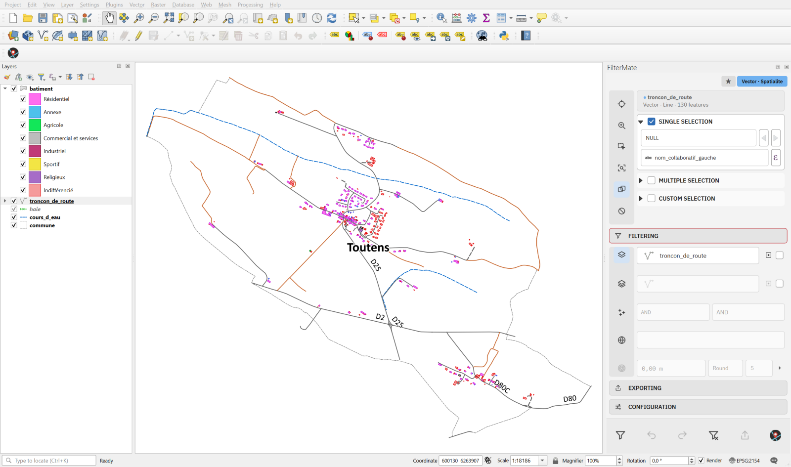
Étape 1. La couche de routes est la couche courante : son nom apparaît dans la première ligne de l'onglet Filtering. Aucune entité n'est encore choisie. -
Choisir la route de référence. Dans la zone Exploring, cochez Single selection et choisissez une route dans la liste. Le canevas la sélectionne (en jaune). Si la liste affiche des identifiants plutôt que des noms, changez le champ d'affichage dans la ligne en dessous.
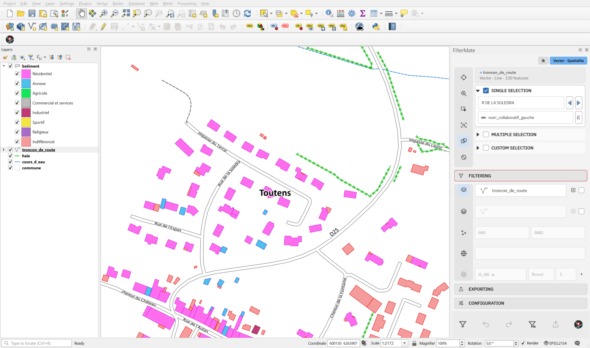
Étape 2. La route sélectionnée est surlignée sur le canevas ; tous les bâtiments et haies sont encore visibles. -
Choisir les couches cibles. Ouvrez l'onglet Filtering. Activez Layers to filter (deuxième bouton de la colonne) et cochez batiment et haie dans la liste.
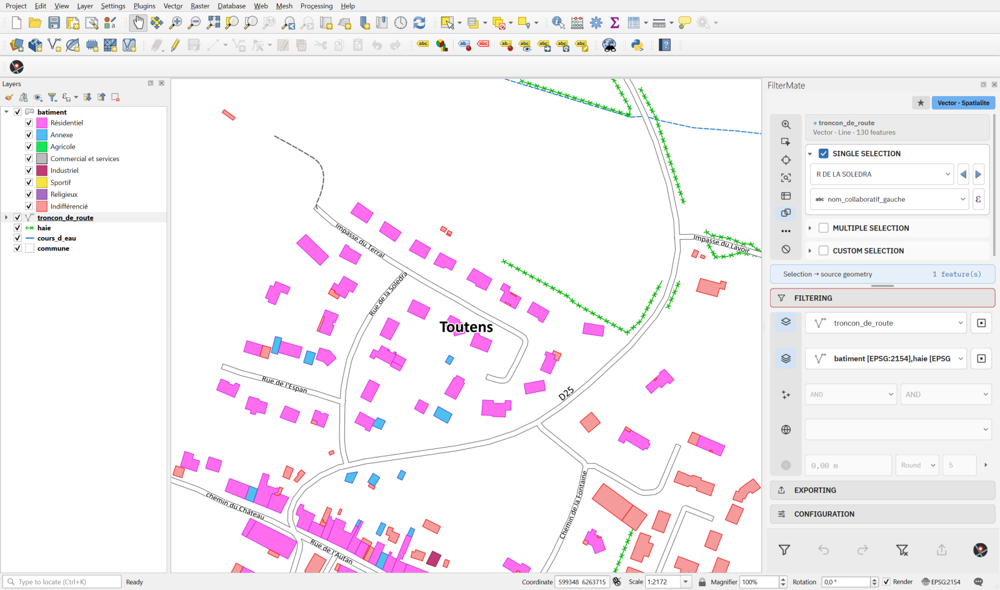
Étape 3. La deuxième ligne de l'onglet Filtering affiche maintenant les deux couches cibles. -
Choisir le prédicat. Activez Geometric predicates et vérifiez qu'Intersect est coché.
Étape 4. Intersect est le prédicat : un bâtiment est conservé s'il touche la route (avec son tampon). -
Ajouter un tampon. Activez Buffer value et saisissez
50. La ligne du type de tampon (Round, 5 segments) peut rester telle quelle.Étape 5. Tout est configuré : route source, deux cibles, Intersect, tampon de 50 m. Rien n'a encore changé sur la carte. -
Lancer le filtre. Appuyez sur le bouton Filter (premier bouton de la barre d'actions). Le canevas est gelé le temps de la tâche et redessiné une seule fois à la fin.
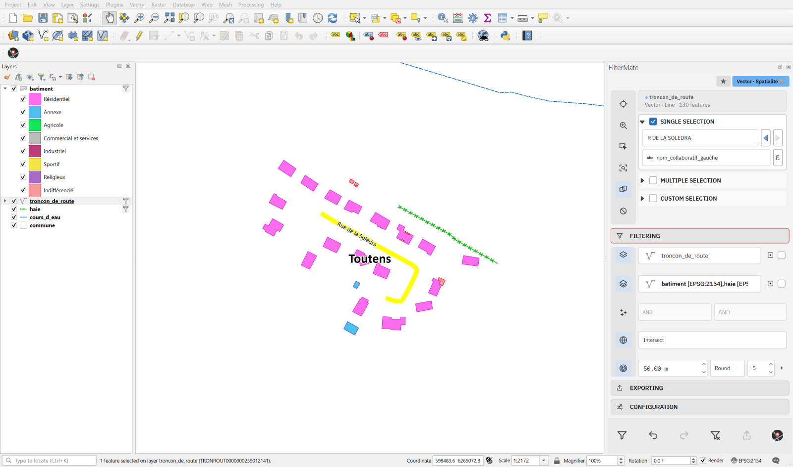
Étape 6. Même emprise qu'à l'étape 5 : seuls les bâtiments (rose) et les haies (vert) à moins de 50 m de la route restent. Undo est désormais actif dans la barre d'actions.
Ce que FilterMate a généré pour la couche de bâtiments GeoPackage, tel qu'on le lit dans Propriétés de la couche → Source → Filtre d'entités du fournisseur :
ROWID IN (SELECT id FROM "rtree_batiment_geom"
WHERE minx <= 598540.4 AND maxx >= 598349.4
AND miny <= 6265342.3 AND maxy >= 6265157.7)
AND ST_Intersects("geom",
ST_Buffer(ST_MakeValid(ST_GeomFromText('LineString (…)', 2154)), 50.0))La première clause interroge le R-tree du GeoPackage pour que SQLite n'évalue le prédicat coûteux que sur les lignes candidates. C'est ce qui fait passer une cascade de 6 minutes sur un projet de 37 couches à 3 secondes.
AND, la nouvelle condition restreint le résultat précédent ; avec OR elle l'élargit ; AND NOT retire des entités.
Les propriétés de la couche montrent l'expression combinée complète.
7Barre d'actions, annulation et historique
| Bouton | Action |
|---|---|
| Filter | Construit et applique le filtre décrit par la zone Exploring et l'onglet Filtering. |
| Undo | Restaure l'état de filtre précédent des couches concernées. L'historique est propre à chaque projet et survit à un redémarrage de QGIS. Tant qu'AGENT est ouvert, Undo et Redo parcourent plutôt les tours de l'agent (section 14). |
| Redo | Réapplique un filtre que vous venez d'annuler. |
| Unfilter | Retire le filtre FilterMate de la couche source et de ses cibles, sans toucher aux autres couches. Contrairement à Undo, il ne remonte pas l'historique. |
| Export | Lance l'export configuré dans l'onglet Exporting. |
| About | Ouvre le site web de FilterMate dans votre navigateur. |
Les boutons sont grisés quand ils ne s'appliquent pas : Undo avant tout filtre, Redo quand rien n'a été annulé, Export tant que l'onglet Exporting n'est pas configuré.
8Favoris
BD TOPO® 3.5 © IGN, Grenade.
Un favori enregistre un filtre complet : couche source, sélection, prédicats, tampon et couches cibles. Le réappliquer prend un clic, ce qui fait des favoris le moyen naturel de conserver des requêtes réglementaires ou récurrentes.
Le menu des favoris
- Add filter enregistre le filtre actuellement appliqué. Il est désactivé quand aucun filtre n'est actif.
- Les favoris enregistrés sont listés dans la section Filtrage rapide en haut : un clic les applique.
- Manage favorites… ouvre le gestionnaire décrit ci-dessous.
- Export… / Import… échangent des favoris sous forme de fichiers JSON entre projets ou collègues.
- Global favorites liste les favoris partagés par tous vos projets.
- Maintenance regroupe les statistiques de la base et les outils de nettoyage.
Le gestionnaire de favoris
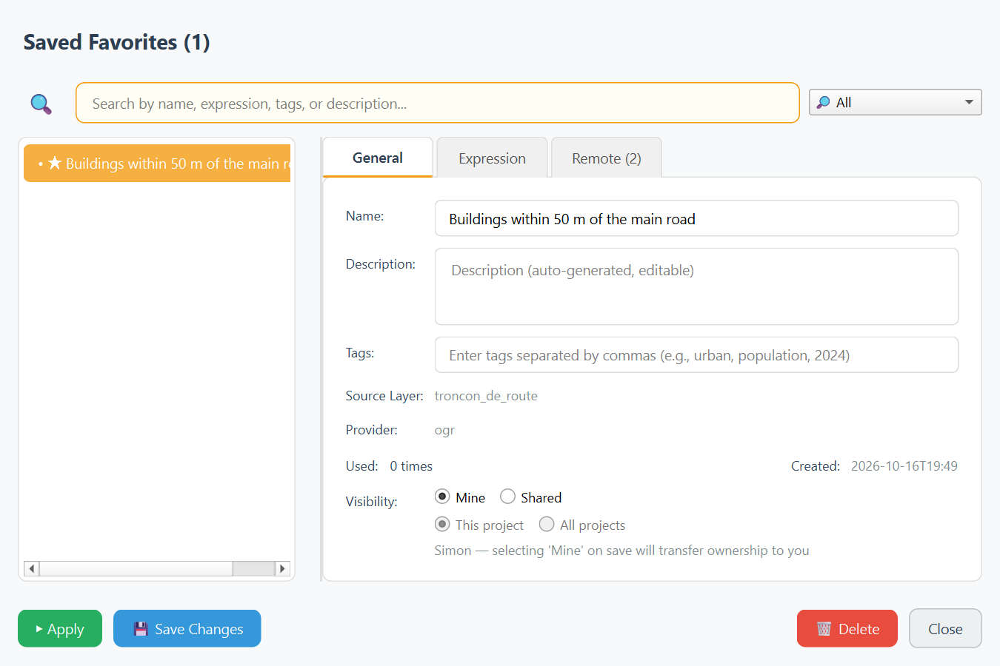
- General : renommer le favori, ajouter une description et des tags, voir sa couche source, son fournisseur et son nombre d'utilisations. Visibility bascule entre This project et All projects (global).
- Expression : l'expression de filtre exacte, modifiable par les utilisateurs avancés.
- Remote : publication vers un dépôt git partagé. FilterMate utilise le gestionnaire d'authentification de QGIS pour les identifiants, une équipe peut donc entretenir une bibliothèque commune de filtres. Nécessite l'extension optionnelle QGIS Resource Sharing.
Apply exécute le favori sur le projet courant, Save Changes enregistre vos modifications, Delete le supprime. Les favoris sont stockés dans la base SQLite propre à FilterMate dans votre profil QGIS et, pour ceux limités au projet, dans le fichier de projet aussi.
9Exporter
BD TOPO® 3.5 © IGN, Saint-Gaudens.
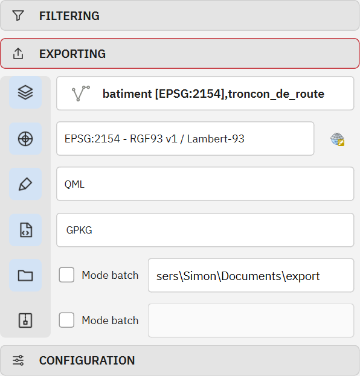
L'onglet Exporting écrit sur disque les entités actuellement visibles des couches choisies, filtres compris. Comme dans l'onglet Filtering, chaque ligne s'active par son bouton de colonne.
| Ligne | Signification |
|---|---|
| Layers | Liste à cocher des couches à exporter. |
| Projection | CRS de sortie. Les couches dans un autre CRS sont reprojetées pendant l'export. |
| Styles | Enregistre les styles de couche à côté des données en QML (natif QGIS) ou SLD (interopérable). En sortie GeoPackage, le style est intégré au fichier. |
| Output format | Tout format vectoriel que QGIS sait écrire : GeoPackage (défaut), Shapefile, GeoJSON, KML, CSV, FlatGeobuf… Les rasters et les nuages de points ont leurs propres formats (section 13). |
| Output folder | Où les fichiers sont écrits. Le mode batch écrit un fichier par couche au lieu d'un seul fichier multi-couches. |
| ZIP | Regroupe le résultat dans une archive unique, en mode batch aussi si souhaité. |
Projets GeoPackage
Quand le format de sortie est GeoPackage et que plusieurs couches sont exportées ensemble, FilterMate intègre un projet QGIS dans le fichier, avec
la hiérarchie des groupes, les styles et le CRS préservés. Avant l'écriture, un dialogue récapitulatif liste ce qui sera exporté et permet de conserver ou d'aplatir la structure des groupes.
Ouvrir le .gpkg obtenu dans QGIS restaure la carte complète.
10Configuration
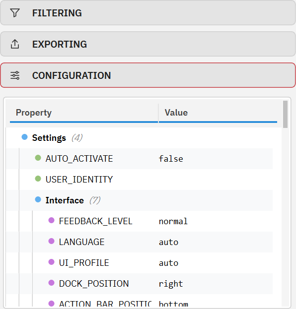
L'onglet Configuration expose les réglages de FilterMate sous forme d'arbre. Double-cliquez sur une valeur pour la modifier ; les valeurs à choix proposent leurs options. La plupart des changements s'appliquent à chaud ; la position du panneau demande de le fermer et de le rouvrir.
Barre de recherche. L'onglet a une barre de recherche. Saisissez une partie du nom d'un réglage : FilterMate ouvre sa branche et le sélectionne. Ctrl+F amène à la barre quand l'onglet est ouvert, Échap l'efface.
| Réglage | Valeurs | Notes |
|---|---|---|
AUTO_ACTIVATE | true / false | Ouvre le panneau automatiquement au chargement d'un projet contenant des couches vectorielles. |
FEEDBACK_LEVEL | minimal / normal / verbose | Quantité de messages dans la barre de messages QGIS. verbose est utile pour signaler un problème. |
LANGUAGE | auto ou l'une des 34 langues | auto suit la langue de QGIS. L'interface se retraduit sans redémarrage. |
UI_PROFILE | auto / compact / normal / hidpi | Taille des contrôles, appliquée aussitôt et au démarrage. auto se base sur l'écran de la fenêtre QGIS et sa mise à l'échelle : une hauteur utile sous 800 pixels logiques donne compact, quelle que soit l'échelle. Forcez hidpi sur un écran 4K si les contrôles paraissent petits. |
DOCK_POSITION | left / right / top / bottom | Côté où le panneau s'ancre à l'ouverture. |
ACTION_BAR_POSITION | top / bottom / left / right | Position des six boutons d'action. |
ACTIVE_THEME | auto / default / dark / light | auto suit le thème de QGIS. |
feature_picker_limit | nombre, 1000 par défaut | Nombre maximal de lignes chargées dans la liste de sélection multiple. |
AGENT | true / false | Affiche la section AGENT (enabled sous APP.OPTIONS.AGENT). Active par défaut. L'activer affiche la section à la prochaine ouverture du panneau ; la désactiver la masque après un redémarrage de QGIS. |
La molette. Une liste ou un champ numérique ne répond à la molette qu'après un clic. Tant que ce n'est pas fait, la molette fait défiler le panneau : une valeur, comme l'entité qui servira de source au prochain filtre, ne change jamais par accident.
L'arbre contient aussi les seuils de performance (quand activer les optimisations), la taille du cache d'expressions, les valeurs par défaut d'export et la
section Extensions (partage de favoris, QFieldCloud). Le fichier complet se trouve dans config/config.json du dossier du plugin ;
config/config.default.json à côté documente chaque clé et peut être recopié pour tout réinitialiser.
11Backends et performances
BD TOPO® 3.5 © IGN, Toulouse Métropole.
FilterMate choisit un backend par couche, selon son fournisseur de données, et l'affiche dans le badge d'en-tête. Le backend décide où s'exécute le test spatial : dans la base de données chaque fois que c'est possible, dans QGIS sinon.
| Badge | Utilisé pour | Mode de filtrage |
|---|---|---|
| PostgreSQL | Couches PostGIS, avec psycopg2 installé | SQL natif avec les fonctions ST_*, un test d'emprise && qui exploite l'index, détection de la clé primaire, et vues matérialisées temporaires (fm_temp_mv_*) pour les très grosses cascades. |
| Spatialite | Fichiers GeoPackage et SpatiaLite | SQL SpatiaLite. Sur GeoPackage, la clause de candidats R-tree est placée en tête pour que le prédicat ne s'exécute que sur les candidats. |
| OGR | Shapefile, GeoJSON, KML et tous les autres formats de fichier | Expressions QGIS évaluées par le moteur GEOS, avec simplification des géométries et union en cascade des entités sources. |
| Memory | Couches temporaires et en mémoire | Évaluation en mémoire. |
Mesures sur des projets réels avec la version 4.8.9 (chronos issus de filtermate.log) :
| Scénario | Avant | Maintenant |
|---|---|---|
| 37 couches GeoPackage filtrées par une commune (Toulouse) | 371 s | 1,6 à 3 s |
| 17 couches PostGIS, cinq communes, option centroïde | 49,6 s | moins de 4 s |
| Première connexion à un serveur PostgreSQL local | 21 s d'attente | immédiat |
- Le canevas est gelé pendant une tâche de filtrage et redessiné une seule fois, l'interface reste donc réactive.
- Cliquez sur le badge backend pour voir les backends disponibles pour la couche courante et en forcer un si le choix automatique ne convient pas.
- Chaque étape de plus de quelques millisecondes est journalisée avec le préfixe
⏱; comparez deux exécutions en filtrant le journal.
Sources distantes
Une couche dont les données sont lues par le réseau suit les mêmes chemins qu'une couche locale : WFS, OGC API Features, ArcGIS Feature et Map Server, WMS / WMTS / XYZ, WCS, tuiles vectorielles,
nuages de points EPT et COPC distants, fichiers lus par /vsicurl/, bases MSSQL, Oracle et HANA. Trois règles tiennent : aucune lecture réseau sur le fil principal,
chaque lecture est bornée, et aucun résultat n'est faux ou partiel sans qu'on le dise.
- Filtres attributaires. Une expression n'est envoyée au serveur, dans son langage (OGC Filter, CQL2 ou SQL), que si elle se traduit entièrement. Les fonctions non prises en charge et les champs inconnus sont refusés sans toucher la couche. Le filtre serveur est préparé en arrière-plan puis installé sur la couche, qui garde son identité et son style.
- Filtres spatiaux. Pour une cible de service web, FilterMate ne lit que les entités dans l'emprise de la source (une requête serveur par rectangle englobant), teste le prédicat exact sur la copie et garde les clés. La copie est plafonnée par défaut à 20 000 entités et 90 secondes (
APP.OPTIONS.REMOTE_MATERIALIZATION). Un résultat coupé par la limite est signalé comme partiel, jamais comme complet. Une liste de clés envoyée à un service compte 500 clés au plus, et un service sans clé stable la refuse. - Exploration. Les listes de valeurs et d'entités, les zooms et les emprises filtrées d'une couche longue à compter s'exécutent dans des tâches d'arrière-plan annulables.
- Rasters. Un raster COG, WCS ou PostgreSQL distant porte des valeurs : statistiques et aperçus tournent en arrière-plan sur une capture bornée, et un WCS utilisé en source ou en cible est copié dans un GeoTIFF du cache de session, limité à la zone retenue. Les couches WMS, WMTS, XYZ et ArcGIS MapServer sont des images rendues : on peut y sélectionner une couleur sur un rendu borné, et elles ne sont jamais une cible de filtre.
- Les tuiles vectorielles sont des cibles seulement. Le filtre s'écrit dans l'expression de filtre du rendu et des règles d'étiquetage, et Undo les restaure.
- Les nuages de points distants (EPT, COPC sur http) sont lus par PDAL 2.4 ou plus récent sur la seule emprise utile, jamais en entier : ils demandent donc une zone explicite.
Là où QGIS ne peut pas rapporter sûrement une erreur de protocole (avant la 3.26, ou avant la 3.36 sous Python 3.12), la lecture d'un service est refusée avec un message. Le panneau, Processing, l'API Python, REST et MCP partagent ces chemins.
12Boîte à outils Processing
BD TOPO® 3.5 © IGN, Haute-Garonne.
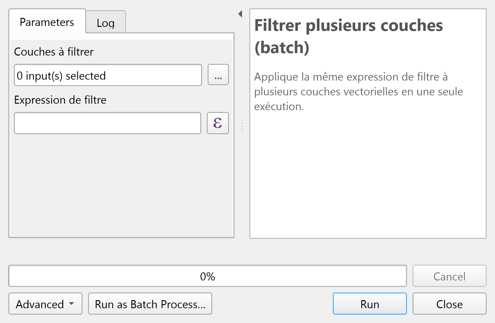
FilterMate enregistre un fournisseur Processing de dix algorithmes et quatre modèles. L'algorithme le plus simple, filtermate:batch_filter, applique une expression de filtre à plusieurs couches vectorielles en une seule exécution ; les filtres croisés de FilterMate 5 sont décrits en section 13.
Comme c'est un algorithme Processing ordinaire, il s'utilise dans le modeleur graphique, en mode batch ou depuis Python :
import processing
processing.run("filtermate:batch_filter", {
"INPUT_LAYERS": ["batiment", "haie"],
"EXPRESSION": "\"etat_de_l_objet\" = 'En service'",
})Des objets tracés depuis une couche vecteur
Dessiner des objets sur un raster avec SAM à partir de points ou de polygones (filtermate:segment_from_features, expérimental) trace un objet par entité d'une couche guide, sans clic :
un point vaut un clic sur l'objet, un polygone donne sa boîte englobante et un point à l'intérieur. La sortie est une couche de polygones dans le SCR du raster, avec les attributs de l'entité,
sam_score (le score que SAM donne à son masque) et, pour un polygone, sam_iou (recouvrement de l'emprise avec l'objet tracé, de 0 à 1).
L'algorithme tourne en arrière-plan, ne modifie aucune couche du projet et peut être une étape d'un modèle. Il utilise le modèle SAM que la pipette raster installe (section 13).
processing.run("filtermate:segment_from_features", {
"RASTER": ortho, "FEATURES": footprints, "OUTPUT": "memory:"})
Mesuré sur 40 bâtiments de la BD TOPO (50 à 2000 m²) sur une orthophoto de 25 cm, le recouvrement médian avec l'emprise est de 0,81 avec la boîte et un point à l'intérieur, et de 0,73 avec des points seuls.
L'emprise de la BD TOPO n'est pas le toit vu du ciel : un sam_iou bas signale un bâtiment à regarder, il ne prouve pas un changement.
Les polygones peuvent ensuite être le paramètre SEGMENTS de Filtrer des couches de tout type par les pixels d'un raster (filtermate:cross_filter_from_raster), qui accepte une couche de polygones, dans n'importe quel SCR, à la place des valeurs de pixels.
13Rasters et nuages de points (5.0)
LiDAR HD, BD TOPO® © IGN, Estavar (Pyrénées-Orientales).
Nouveau dans la version 5.0. Les couches raster et nuage de points LiDAR sont des sources et des cibles à part entière. Les prérequis ne changent pas : QGIS 3.22 ou plus récent (nuages de points à partir de 3.26), Qt5 ou Qt6. PDAL 2.4 ou plus récent est facultatif (hauteur au-dessus d'un MNT, écriture directe de COPC).
Le principe ne change pas : EXPLORING sélectionne sur la couche courante, FILTERING relie cette sélection aux couches à filtrer avec ses prédicats géométriques et son tampon. Quand la couche courante est un raster ou un nuage de points, les groupes vecteur d'EXPLORING laissent la place au panneau de ce type ; la sélection devient une géométrie source (pixels retenus vectorisés, ou empreinte des points retenus).
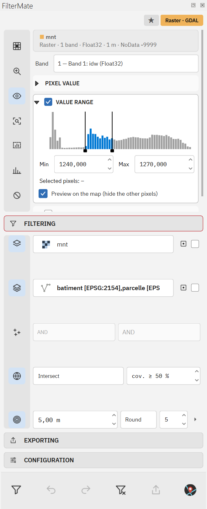
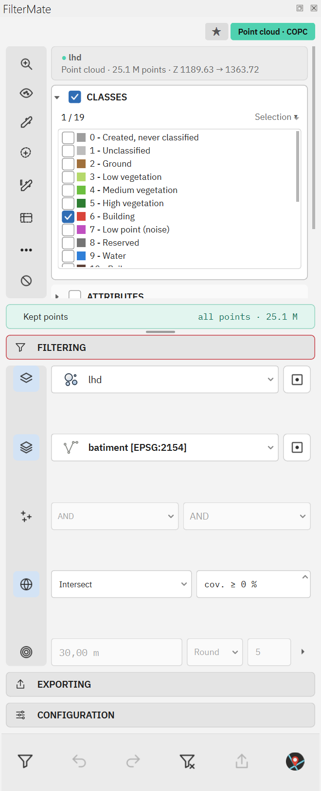
Raster
- Bandes : une ligne par bande avec son rôle de couleur (R, V, B, PIR, lu dans le rendu ou deviné), la bande active et les bandes que la pipette compare ; raccourcis RVB, IRC et RVB + PIR.
- Pipette sur la carte, avec une tolérance : les pixels similaires de tout le raster (une couleur sur une orthophoto, une valeur, une classe d'un raster à palette), l'objet cliqué seul (une piscine, un toit, une parcelle) ou les objets similaires (les objets semblables à celui cliqué, dans des ratios choisis de sa surface). Les deux cibles d'objets tracent avec SAM quand il est installé, et par la couleur sinon (plus bas). Ctrl+clic ajoute un relevé ; la carte détoure les objets et le bandeau de sélection donne la part retenue.
- Plage de valeurs : faites glisser les poignées de l'histogramme, sur une bande ou sur toutes les bandes de couleur à la fois ; la grandeur peut être la valeur elle-même ou, depuis un MNT, la pente (degrés ou %), l'exposition, l'ombrage ou la rugosité. Le bouton Sélectionner (ou la case d'aperçu) masque les autres pixels sur la carte.
- Une expression de la calculatrice raster, avec un menu Insérer pour les références de bandes et les préréglages spectraux permis par les rôles : NDVI végétation, NDVI sol nu, NDWI eau, ExG végétation.
Nuage de points
- Classes ASPRS et LiDAR HD avec des préréglages (sol, végétation, bâtiments, sursol, eau, sans bruit).
- Plages Z (au millimètre), intensité, retour ; hauteur au-dessus d'un MNT calculée avec PDAL.
- Conditions enchaînées par AND / OR sur tout attribut, classification comprise :
Classification = 6avec une hauteur au-dessus du MNT d’au moins 9 m garde les toits hauts (histoire 10). - Option « appliquer aux autres dalles du jeu » pour les données livrées en dalles (LiDAR HD).
- Sur le rail : le bouton Identifier relève une classe, la pipette de valeur écrit une condition autour de la valeur relevée sur l'attribut choisi (Ctrl+clic ajoute un OU), et l'outil zone dessine un rectangle, un polygone, une forme à main levée ou un cercle qui découpe l'emprise de la source.
Objets tracés par SAM (5.1, expérimental)
Les deux cibles d'objets de la pipette peuvent utiliser SAM 2.1 tiny, un modèle de segmentation qui tourne sur votre ordinateur, sur le processeur. Clicked object trace l'objet sous le clic. Similar objects le trace, puis trace chaque objet qui lui ressemble dans la carte visible. Les objets sont de simples polygones : le filtre appliqué aux autres couches n'a pas besoin du modèle, et un filtre enregistré se rejoue sans lui. Sans SAM, les deux cibles trouvent les objets par leur couleur, et la liste Engine du groupe PIPETTE bascule de l'un à l'autre.
Installation, au premier usage
FilterMate ne fournit ni le modèle ni son moteur d'exécution. Choisissez Clicked object ou Similar objects sur un raster : un message propose d'installer SAM, onnxruntime (environ 100 Mo) et le modèle (62 Mo). Rien n'est installé avant votre accord, ni au démarrage de QGIS. Une fois que vous confirmez, pip installe onnxruntime en arrière-plan, comme une tâche QGIS, dans votre profil QGIS ; le Python de QGIS n'est pas modifié. Le modèle se télécharge ensuite depuis une révision figée, et chaque fichier est vérifié par son SHA-256 avant de remplacer quoi que ce soit. Le téléchargement peut être annulé et passe par le proxy HTTP des options de QGIS. En dehors de ces deux téléchargements, rien ne quitte votre ordinateur.
Un bouton Install SAM… reste dans le groupe. Si pip échoue, la raison est dans le journal de FilterMate et le groupe affiche la commande à lancer à la main dans un terminal (l'OSGeo4W Shell sous Windows). Si les fichiers du modèle sont abîmés, Repair the model… remplace les mauvais.
Gestes
| Geste | Effet |
|---|---|
| Déplacer la souris | Contour de l'objet sous la souris, une fois la zone préparée. |
| Clic | Un nouvel objet, ajouté aussitôt. |
| Maj+clic | Le dernier objet, étendu. |
| Clic droit | Le dernier objet, rogné. |
| Tracer un rectangle | Un nouvel objet dans le rectangle. |
| G (ou Tab quand QGIS le laisse passer) | Le dernier objet avec le contour suivant que SAM a proposé : une partie, l'objet, un groupe. |
| Échap | Rejette les propositions ; sinon retire le dernier objet, ou la dernière recherche avec son objet cliqué. |
| Clear | Oublie tous les objets tracés par SAM. |
| To layer | Ajoute les objets au projet comme une couche de polygones, dans le SCR du raster, numérotée, avec leur surface en m². C'est une couche en mémoire : Make Permanent dans QGIS la conserve. C'est la couche à donner à Processing, à exporter ou à éditer. |
Le premier clic d'une zone la prépare : environ 3 s sous QGIS pour Windows, puis environ 0,1 s par geste.
Objets similaires : des propositions à garder ou à rejeter
Similar objects trace d'abord l'objet cliqué. Les taches de couleur voisine dans la carte visible, 120 au plus, sont ensuite proposées à SAM, qui redessine chacune en arrière-plan. Un objet est gardé quand sa surface, et sa forme avec same shape, restent dans les ratios du groupe par rapport à l'objet cliqué, et quand il lui ressemble. Les objets trouvés sont des propositions, cernées de tirets et hors de la sélection : un clic en garde une, un clic droit la rejette, Entrée (ou Keep) les garde toutes, Échap (ou Reject) les rejette toutes. Environ la moitié des objets proposés sont des bâtiments : gardez ou rejetez-les avant de filtrer avec eux.
Les objets sont des polygones dans le SCR du raster, enregistrés avec le filtre comme n'importe quelle sélection raster. Processing (le paramètre SEGMENTS), l'API REST et les outils MCP (segments dans raster_selection) les acceptent aussi.
Ce qu'il fait bien, mesuré
Recouvrement médian avec des contours de référence (IoU, 1 est une coïncidence parfaite) sur une orthophoto de 25 cm, le 9 novembre 2026 :
| Geste | 100 bâtiments | 18 parcelles |
|---|---|---|
| 1 clic | 0,65 | 0,21 |
| 3 clics correctifs | 0,76 | 0,27 |
| Rectangle | 0,82 | 0,44 |
| Moteur couleur, 3 clics | 0,52 | 0,26 |
SAM convient aux bâtiments et aux autres objets bien délimités. Les parcelles n'ont pas atteint l'amélioration exigée, car une limite cadastrale est souvent invisible sur l'image, et les arbres n'ont pas été validés : les haies tendent à fusionner. Utilisez le moteur couleur ou une couche vecteur pour eux. Les objets similaires sont un début, pas un outil fini : sur dix bâtiments jamais utilisés pour fixer le seuil d'apparence, la précision médiane (objets trouvés qui sont des bâtiments) est de 0,35 et le rappel de 0,26. Les chiffres complets et la méthode : docs/SEGMENTATION.md (en anglais).
Ce que deviennent les cibles
| Cible | Effet du prédicat (Disjoint garde l'extérieur) |
|---|---|
| Vecteur | Sous-ensemble des entités qui vérifient le prédicat ; couverture minimale possible pour les polygones. |
| Raster | Pixels hors de la géométrie source passés en NoData (fichier VRT découpé) ; la couche garde son style. |
| Nuage de points | Points hors de la géométrie source retirés (fichier COPC dérivé, écrit par PDAL). |
Neuf combinaisons
La source (la couche courante) et les cibles peuvent être de n'importe quel type. FILTERING garde sa forme : couches à filtrer, opérateurs de combinaison (AND, OR, AND NOT, ou remplacement quand la combinaison est décochée), prédicats géométriques, tampon et centroïdes. Un réglage est nouveau : la couverture minimale (%) des polygones par la géométrie source. Disjoint, déjà l'un des huit prédicats, garde ce qui se trouve à l'extérieur de la géométrie source, quel que soit le type de cible. Chaque case renvoie à un cas d'usage détaillé avec les réglages à reproduire.
| Source ↓ · cible → | Cible vecteur | Cible raster | Cible nuage de points |
|---|---|---|---|
| Vecteur entités sélectionnées ou une expression ; tampon et centroïdes s'appliquent |
Entités gardées par le prédicat. Cas d'usage 1 à 8. | Pixels dans la géométrie, par un VRT découpé. Cas d'usage 12. | Points dans la géométrie, par un COPC dérivé. Cas d'usage 12. |
| Raster les pixels gardés, vectorisés : plage, pipette, objet, indice, dérivé de terrain |
Entités gardées, avec une couverture minimale pour les polygones. Cas d'usage 9. | Pixels d'un autre raster sous les pixels gardés : un masque NDVI de l'ortho IRC appliqué à l'ortho RVB. Cas d'usage 13. | Points sous les pixels gardés : les points LiDAR des toits relevés sur une orthophoto. Cas d'usage 14. |
| Nuage de points l'emprise des points gardés : classes, Z, intensité, retours, hauteur au-dessus d'un MNT, zone |
Entités gardées, avec une couverture minimale. Cas d'usage 10 et 11. | Pixels sous les points gardés : un MNT restreint aux points sol. Cas d'usage 15. | Points d'un autre nuage dans l'emprise : la végétation haute à moins de 10 m des lignes électriques. Cas d'usage 16. |
Une dixième source se passe de couche : une géométrie fixe (WKT ou emprise) donnée à l'API Python ou REST, ou à l'algorithme cross_filter_from_geometry.
Une cible identique à la source est refusée, comme les couches sans géométrie.
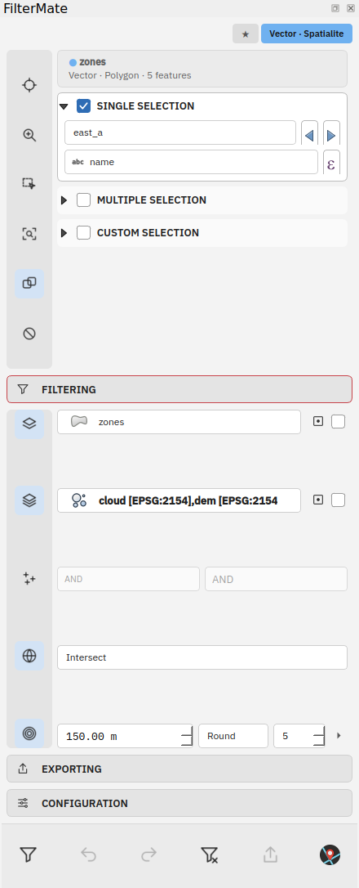
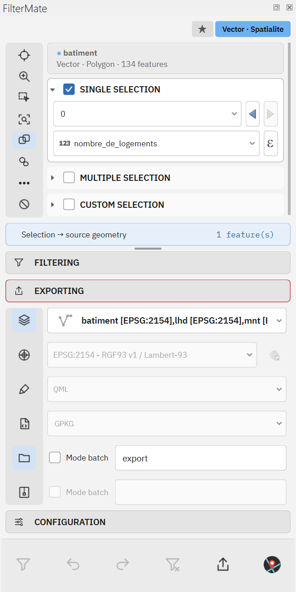
Résultats sur la carte
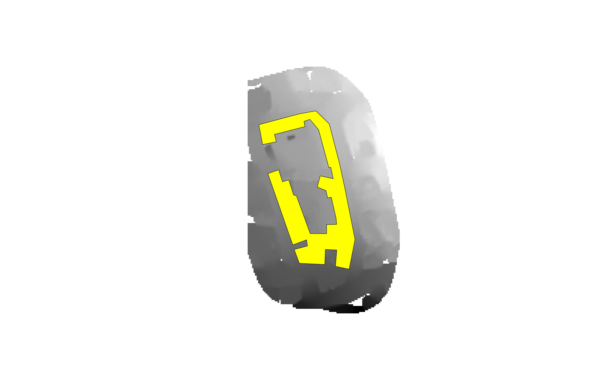
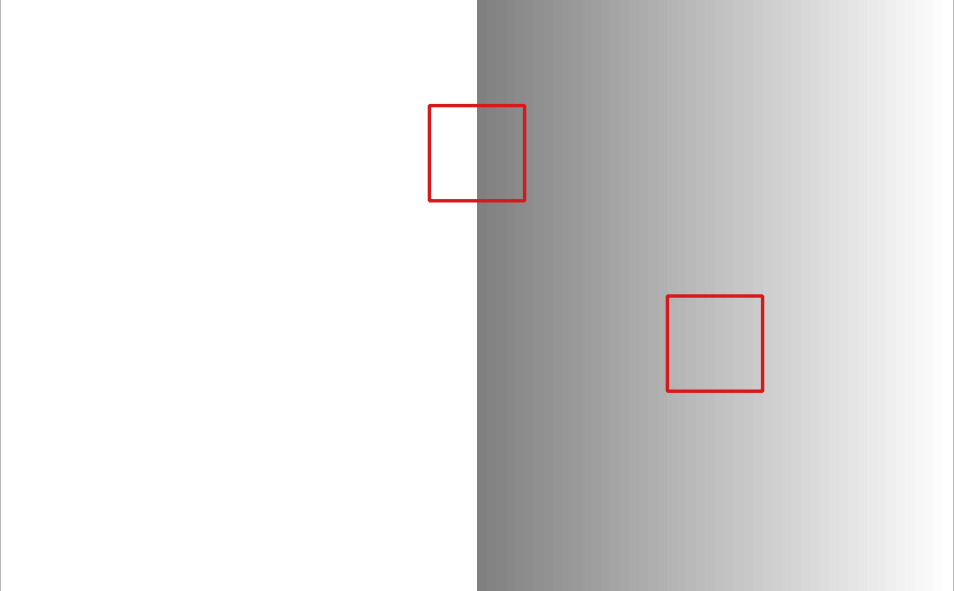
Ces captures ont été réalisées dans QGIS 4.2 sur un petit jeu de données synthétique.
Annuler, projet, export
Les rasters découpés (VRT) et les nuages de points découpés (COPC) gardent l'identifiant, le style et la position de la couche. Annuler, Rétablir et Défiltrer remettent les sources d'origine ; le projet est toujours enregistré avec la source d'origine et les découpes sont rejouées à son ouverture. L'export écrit les rasters en GeoTIFF / COG et les nuages en LAZ / LAS / COPC / GPKG / CSV, seuls ou avec des couches vecteur.
Options
La prise en charge des rasters et des nuages de points est activée par défaut. Dans l'onglet Configuration, APP.OPTIONS.RASTER.enabled et
APP.OPTIONS.POINT_CLOUD.enabled activent ou désactivent chaque type ; les listes de couches suivent immédiatement. Désactiver un type ne défiltre pas ses couches : un avertissement nomme celles qui restent filtrées.
Les options APP.OPTIONS.CROSS_FILTER.* règlent le mode de découpe des nuages de points (exact ou boîte englobante), le nombre maximal de pixels raster, la résolution de l'empreinte, la taille du cache et le chemin de pdal.
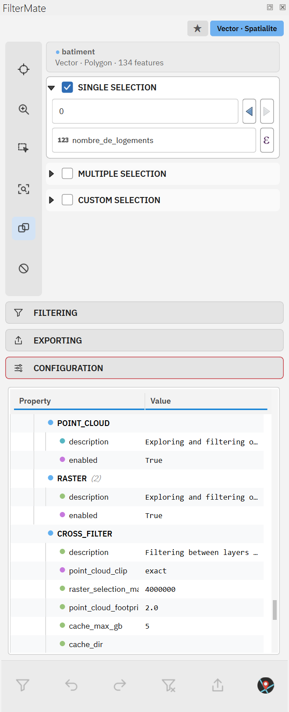
PDAL. La hauteur au-dessus d'un MNT et l'écriture directe de fichiers COPC demandent PDAL 2.4 ou plus récent. Avec un PDAL plus ancien, les cibles nuage de points sont découpées par l'exporteur de QGIS, un export COPC écrit du LAZ avec un message, et la hauteur au-dessus d'un MNT est désactivée avec un message qui nomme la version.
Automatisation
Dix algorithmes Processing (batch_filter et cross_filter hérités de la 4.x, cross_filter_from_raster, cross_filter_from_point_cloud, cross_filter_from_geometry, filter_point_cloud,
clear_filters, apply_favorite, export_filtered_layers, segment_from_features) et quatre modèles prêts à l'emploi (extraction par zone, végétation haute près de lignes,
parcelles sur pente douce, bâtiments absents du LiDAR) s'exécutent depuis la boîte à outils, qgis_process (le plugin démarre sans fenêtre QGIS), Python et l'API REST.
Voir docs/AUTOMATION.md.
14Agent (5.1, expérimental)
Expérimental. Un modèle peut mal comprendre une demande. Vérifiez le nombre d'entités que chaque filtre dit avoir gardées, et annulez ce qui ne correspond pas à votre demande.
AGENT est un tchat en haut du panneau. Vous écrivez une phrase, par exemple les bâtiments au-dessus de 1200 m dans la commune sélectionnée, et l'agent filtre, sélectionne, zoome, affiche ou masque des couches et exporte.
Il utilise les mêmes filtres que le reste de FilterMate. La section est affichée par défaut ; l'option AGENT de l'onglet Configuration la masque.
Il peut aussi chercher, décrire et lancer des algorithmes Processing de QGIS (find_algorithms, describe_algorithm, run_algorithm, aussi par REST et les deux serveurs MCP), dans des limites :
seulement les fournisseurs native et qgis, seulement un algorithme qui produit une couche ou ne renvoie que des statistiques, aucun exécuteur SQL ou Python, et des entrées qui sont des couches du projet, jamais un chemin ni une URL.
Chaque couche produite est un fichier temporaire ajouté au projet, retiré si vous annulez le tour, et Stop annule l’exécution.
Choisir un modèle
- Quota gratuit. La première fois, les réglages proposent quelques requêtes gratuites par mois, par un relais de FilterMate vers Claude Haiku 5.5 (Anthropic), sans clé à saisir. Le relais compte ce qui est dépensé et ne garde aucune conversation. Une fois le quota épuisé, le panneau demande votre propre clé d'API.
- Votre propre fournisseur. Claude, Mistral, OpenAI, tout serveur compatible OpenAI, ou un modèle Ollama local.
- La clé est conservée dans la base d'authentification de QGIS, qui demande son mot de passe maître, jamais dans un fichier de réglages. Elle n'est envoyée qu'au serveur pour lequel elle a été saisie, et vous pouvez la supprimer dans les réglages.
- Consentement. Rien ne quitte votre ordinateur avant que vous ayez choisi un modèle et donné votre accord. Changer de fournisseur ou d'adresse le redemande.
Ce que vous voyez
Les demandes, les étapes et les changements apparaissent comme des cartes dans la conversation. Chaque filtre dit combien d'entités il a gardées, et avertit s'il n'en a gardé aucune, avec ce qu'il faut vérifier. La conversation est conservée par projet sur cet ordinateur et réaffichée à l'ouverture du projet ; le modèle ne la récupère pas, une conversation repart donc de zéro. New conversation oublie ce qui était conservé pour le projet.
Les filtres s'appliquent aussitôt, chaque étape s'annule
- Tant qu'AGENT est ouvert, Undo et Redo de la barre d'actions (et Ctrl+Z, Ctrl+Y) parcourent les tours de l'agent. Leur info-bulle nomme la demande.
- La page History liste les tours, appliqués ou annulés, et renvoie une demande. Pour la dernière demande, elle liste les étapes : Undo back to here remet les couches comme elles étaient avant l'étape choisie, comme une étape à part que Undo reprend.
- Undo atteint aussi les couches qu'un tour a ajoutées ou retirées, les sélections et la visibilité. Une couche retirée revient depuis sa définition, avec le même identifiant et à sa place dans son groupe ; une couche gardée en mémoire ne peut pas revenir, et le panneau le dit. Les zooms et les exports ne s'annulent pas.
- Vous pouvez demander à l'agent d'annuler sa dernière demande. Arrêter une demande garde ce qui a été fait, et on peut encore l'annuler.
Confirmations et limites
- Les exports et les couches ajoutées ou retirées vous sont d'abord demandés.
- Un filtre écrit par le modèle est une simple clause
WHERE, lue jeton par jeton face à une liste de ce qu'un filtre exige : pas de sous-requête, pas de fonction hors liste. Une sélection par expression suit la même règle. Un filtre atteint quand même la base avec vos droits. - Une couche n'est ajoutée qu'à partir d'un fichier de données simple, d'une adresse https publique ou d'un service listé par une source que vous avez cochée. L'agent ne peut pas donner à QGIS une chaîne de fournisseur de son cru, ni un chemin
PG:ou/vsi. - Un banc de 39 demandes en français et en anglais, sur un projet simulé, a donné 39/39 avec Claude Haiku 5.5 le 10 novembre 2026.
Les sources, cochées une à une
Dans l'onglet Sources des réglages, rien n'est coché au départ. Dans le tchat, seul ce qui est coché peut servir.
- Portails de données ouvertes : data.gouv.fr, Opendatasoft, et les portails CKAN du Royaume-Uni, du Canada, d'Australie, d'Allemagne, d'Italie, des Pays-Bas, d'Irlande et du Japon.
- Services WFS : IGN, IBGE, PRG. Une couche WFS doit être listée par le service, et son adresse est construite par le plugin.
- Scènes Sentinel-2 d'Earth Search, ouvertes sans les télécharger.
- Connecteurs MCP : des serveurs distants, comme celui de data.gouv.fr. Leurs outils rejoignent la conversation, et un outil qui ne se déclare pas en lecture seule vous demande d'abord. Le plugin ne lance aucun processus : un serveur qui ne parle que stdio doit être lancé en mode HTTP.
Tout ce qui vient de ces serveurs est borné : durée et taille plafonnées, et Stop fonctionne. Un fichier sur un serveur qui en donne des morceaux (GeoPackage, GeoTIFF, zip) est lu là où il est.
Tout autre fichier est d'abord copié dans le dossier filtermate/open_data de votre profil QGIS, dans la limite de 512 Mo et de 3 minutes, sans figer l'interface ; une archive qui s'étendrait au-delà de 2 Go est refusée.
Chaque échec dit sa cause : le statut du serveur, une page web, un fichier trop gros, trop lent ou coupé, une archive sans couche.
Ce qui part au modèle
À chaque demande, le fournisseur que vous avez choisi reçoit votre phrase, les noms de vos couches et de leurs champs, les résultats des outils qu'il appelle, et l'état du projet :
- toujours : le SCR du projet, l'échelle, l'emprise visible et la couche active ; jusqu'à 30 couches dans l'ordre de l'arbre des couches, chacune avec son type, son nombre d'entités, son SCR s'il diffère de celui du projet, son groupe, sa visibilité et son filtre ; les sélections ;
- ce qui a changé depuis la dernière réponse, quand quelque chose a changé : couches ajoutées ou retirées, filtres, visibilité, sélections, couche active, vue, y compris ce que vous avez modifié hors de la conversation ;
- à la demande du modèle, pour une couche : sa place dans l'arbre, son emprise, son style (rendu, champ, nombre de classes, étiquettes, opacité, plage d'échelle), ses jointures et ses relations. Les valeurs de classes et les étiquettes ne sont pas envoyées.
Les valeurs d'attributs ne partent au modèle que si vous les autorisez dans les réglages : sans cela, les outils qui lisent des valeurs (field_values, layer_statistics, sample_features, identify_at) ne sont pas proposés.
Les valeurs déjà écrites dans des filtres et des favoris partent quand même, et la boîte de dialogue le dit. Avec le quota gratuit, la requête passe par le relais jusqu'à Claude Haiku 5.5.
Serveur MCP intégré au plugin
Désactivé par défaut. Dans les réglages de l'agent, l'onglet Other applications l'active : FilterMate écoute alors sur http://127.0.0.1:17823/mcp (le port est modifiable) et demande un jeton d'accès.
Claude Code ou un autre client MCP de cet ordinateur peut piloter FilterMate selon les règles du tchat : mêmes outils, mêmes sources cochées, mêmes confirmations.
Chaque changement est une étape de l'historique du panneau et apparaît dans la conversation avec le nom de l'application. Un changement est refusé pendant que le tchat travaille ou qu'un dialogue QGIS est ouvert ; les lectures continuent.
- Des boutons copient la configuration pour les clients MCP, l'entrée de Claude Desktop (qui passe par
mcp-remoteet demande donc Node.js ; elle n'a pas été essayée avec Claude Desktop lui-même) et la commandeclaude mcp add. Les trois contiennent le jeton. New access token le remplace. - Le serveur n'écoute que sur
127.0.0.1. Avec QGIS sous Windows et le client dans WSL 2, cette adresse n'est pas la même machine, sauf si WSL utilise le réseau en miroir. - Aucun paquet Python n'est nécessaire. Le serveur stdio décrit dans docs/AUTOMATION.md reste disponible.
Notes pour les développeurs : docs/AGENT_MODE.md (en anglais).
15Dépannage
Où regarder d'abord
- Panneau Messages du journal de QGIS, onglet FilterMate : avertissements et erreurs de la session en cours.
logs/filtermate.logdans le dossier du plugin : le journal complet, y compris les lignes de chrono⏱. Définissez la variable d'environnementFILTERMATE_LOG_LEVEL=DEBUGavant de lancer QGIS pour un journal détaillé.- Passez
FEEDBACK_LEVELà verbose dans l'onglet Configuration pour voir tous les messages dans la barre de messages.
Questions fréquentes
| Symptôme | Cause et solution |
|---|---|
| Le filtre ne renvoie aucune entité | Vérifiez que le prédicat correspond aux types de géométrie (une ligne ne contient jamais un polygone), que le signe du tampon est bien celui voulu, et qu'aucune sélection QGIS résiduelle ne traîne sur la couche source avec une expression « toutes les entités ». |
| « Pas de couche cible » ou rien ne se passe | La ligne Layers to filter est désactivée ou vide. Les filtres attributaires seuls demandent au moins une sélection dans la zone Exploring. |
| Une couche ne peut pas être filtrée | Elle est en mode édition : répondez au dialogue, ou désactivez l'édition dans QGIS. |
| Le badge indique OGR sur une couche PostGIS | psycopg2 manque dans le Python de QGIS. Installez-le et relancez QGIS. |
| Les contrôles sont minuscules sur un écran 4K | Mettez UI_PROFILE sur hidpi. |
| Le panneau s'ouvre dans la mauvaise langue | Fixez LANGUAGE explicitement au lieu d'auto. |
| Un filtre d'une ancienne session est toujours appliqué | Les filtres vivent dans le fichier de projet. Utilisez Unfilter, ou effacez le filtre fournisseur dans les propriétés de la couche. |
| La section AGENT est absente | L'option AGENT de l'onglet Configuration est désactivée. Activez-la et rouvrez le panneau. |
| AGENT demande ma propre clé d'API | Le quota gratuit est épuisé, le vôtre pour le mois ou le total du relais. Saisissez une clé dans les réglages d'AGENT, ou choisissez un autre fournisseur, par exemple un modèle Ollama local. |
| Un modèle local donne un délai dépassé | Le délai réseau de QGIS s'applique à l'agent (60 s par défaut). Un modèle local lent à démarrer peut en demander plus, et le message le dit. |
| SAM n'est pas installé : onnxruntime a été refusé ou l'installation a échoué | Si vous refusez la question, les cibles d'objets utilisent le moteur couleur, et le bouton Install SAM… du groupe PIPETTE la repropose. Si pip échoue (pas de réseau, pas de pip), la raison est dans le journal de FilterMate et le groupe affiche la commande à lancer à la main dans un terminal, l'OSGeo4W Shell sous Windows. |
| Le modèle SAM ne se télécharge pas, ou est signalé abîmé | Le téléchargement passe par le proxy HTTP des options de QGIS et peut être annulé. Chaque fichier est vérifié par son SHA-256 avant de remplacer quoi que ce soit. Cliquez sur Repair the model… pour remplacer les mauvais fichiers. |
Obtenir de l'aide
- Signalez les bugs avec un extrait du journal sur GitHub Issues.
- Posez vos questions sur le serveur Discord.
- Regardez les tutoriels vidéo.